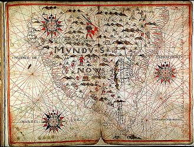

Listen to 'Look out' in English

Copyright Michel Galiana 01.04.2006 (c) (r) All rights reserved |
Transl. Christian Souchon 01.04.2006 (c) (r) All rights reservedXII LOOK-OUT Pilgrims' records, old maps, stars: in the lands beyond A velvet tape is tied round parchments, vales and tombs. The star where are patched up your shreds of maps flickers But its voice is mere wind, alien, strange, -sinister. (Harmony reigns in these fields bare of horizons) You gather among the heathers of your reason A vibration that for your history accounts. The silence in the depths is like a backward ebb. Heavens dazzle under the tightly closed lids. Heaviness -more than wings- to the well-known hymns leads. Bear in mind that you should never again desert The other bounds where absence to presence reverts. April 27th 1992
Note :
Listen to 'Look out' in English